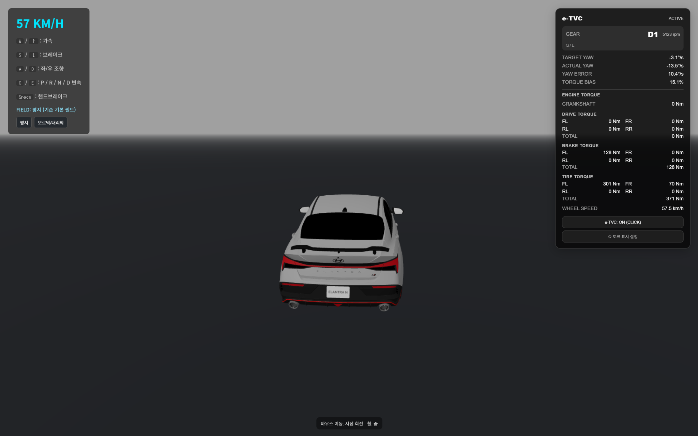
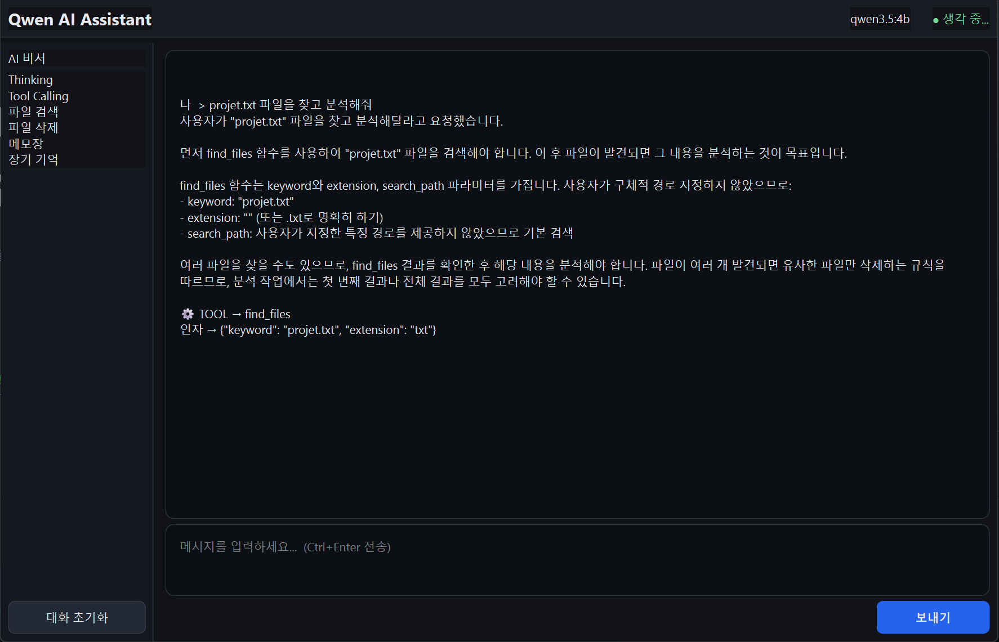
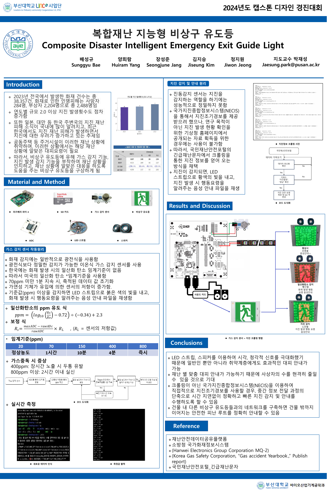

System Design
기능 간 관계를 구조화하고 확장 가능한 흐름으로 설계합니다.
ENGINEERING PORTFOLIO · 2026
문제를 정의하고, 데이터와 동작을 분석하며, 필요한 기술을 연결해 해결책을 구현하는 엔지니어입니다.
저는 특정 기술이나 산업에 한정되기보다 문제의 원인을 파악하고, 목적에 맞는 기술을 선택해 해결책을 구현하는 엔지니어입니다.
3D 시뮬레이션, 로컬 AI, 복합재난 비상구 유도등 캡스톤 프로젝트를 수행하며 설계, 구현, 검증, 개선의 전 과정을 경험했습니다. 오류가 발생하면 결과만 수정하지 않고 데이터의 흐름과 시스템의 동작을 추적합니다.
기능 간 관계를 구조화하고 확장 가능한 흐름으로 설계합니다.
필요한 기술을 연결해 실제로 작동하는 결과물을 만듭니다.
로그와 데이터 흐름을 근거로 원인을 좁히고 검증합니다.

실제 프로젝트 화면 · 클릭하여 원본 보기 ↗PROJECT 01 · FEATURED
Three.js 기반 3D 환경에서 차량의 입력, 물리, 지형, 충돌과 상태 UI를 하나의 시스템으로 연결했습니다.

실제 프로젝트 화면 · 클릭하여 원본 보기 ↗PROJECT 02
로컬 LLM을 GUI와 파일 시스템에 연결하고, Streaming 응답과 Tool Calling을 함께 처리하는 구조를 구현했습니다.
프로젝트 상세 보기 →
캡스톤 포스터 PDF 보기 ↗PROJECT 03 · TEAM CAPSTONE · 2024
가스 센서와 재난문자 정보를 활용해 재난 상황에 따라 LED 색상과 음성 안내를 바꾸는 시스템을 팀 프로젝트로 구현했습니다. 센서, 외부 데이터, 시각·청각 출력을 라즈베리 파이에서 연결했습니다.
프로젝트 상세 보기 →CASE STUDY · 01
입력에 따라 모델만 움직이는 구조로는 차량의 상태 변화와 지형 상호작용을 표현하기 어려웠습니다.
입력, 컨트롤러, 물리 계산, 휠 상태, 렌더링의 관계를 나누어 각 단계의 책임을 정의했습니다.
조향·구동·제동, 경사와 마찰, 충돌, e-TVC HUD와 Map Editor를 단계적으로 연결했습니다.
맵을 편집·저장하고 즉시 시험 주행하며 기능을 반복 검증할 수 있는 웹 시스템으로 확장했습니다.
CASE STUDY · 02
단순 응답 생성을 넘어 사용자의 요청을 파일 검색과 작업 실행으로 연결할 구조가 필요했습니다.
일반 응답과 Streaming 응답에서 Generator, Chunk, Message가 다르게 처리되는 지점을 로그로 확인했습니다.
모델, 도구, UI 계층을 분리하고 Thinking, Content, Tool Call을 각각 처리하도록 구성했습니다.
Qwen 모델의 응답을 PySide6 GUI에 표시하고 PC 파일 작업까지 수행하는 실행 환경을 완성했습니다.
CASE STUDY · 03
화재와 지진 등 서로 다른 재난에 맞춰 안내할 수 있도록, 기존 비상구 유도등에 상황 인지와 안내 기능을 결합하고자 했습니다.
가스 센서 입력은 ADC로 읽고, 지진 정보는 국민재난안전포털 긴급재난문자에서 수집하는 방식으로 구성했습니다.
라즈베리 파이 4에서 센서 데이터와 재난문자 갱신·키워드를 확인하고, 상황에 맞는 LED 색상과 행동요령 음성 파일을 출력하도록 연결했습니다.
평상시는 초록색, 가스 감지 시 빨간색, 지진 정보 확인 시 노란색으로 표시하고 재난별 음성 안내를 제공하는 시제품을 구성했습니다.
발전 방향: 지진 정보 전달 지연 개선 및 유도등 간 네트워크를 통한 피난 경로 안내. 포스터에서 제안한 확장 방향입니다.
발표 포스터 PDF 보기 ↗아이디어를 기능으로 옮기고, 동작을 관찰하며, 근거를 통해 개선합니다.
목표와 제약 조건을 구체화합니다.
시스템과 데이터의 흐름을 나눕니다.
모듈과 기능 사이의 관계를 설계합니다.
작은 단위로 구현하고 연결합니다.
로그와 실제 동작으로 가설을 검증합니다.
발견한 문제를 다음 설계에 반영합니다.
C · Python
JavaScript
Simulation · State Management
Tool Integration · File System
Raspberry Pi · ADC · Sensor · LED
Three.js · PySide6 · Ollama
Qwen · Git · GitHub
Architecture · Debugging
Verification · Iteration
LET'S BUILD SOMETHING USEFUL